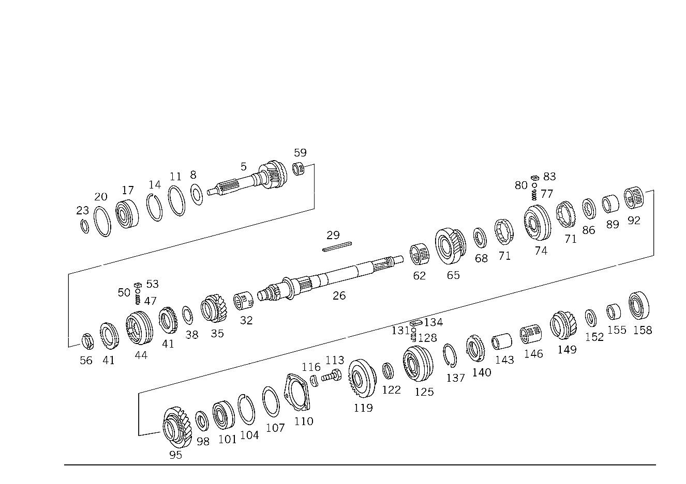

| № | Артикул | Название | Кол. | Примечание | Ограничение |
|---|---|---|---|---|---|
| 5 | A 117 260 14 20 | - ПРИВОДНОЙ ВАЛ | 1 | СПЕРЕДИ | |
| 8 | A 186 262 00 66 | - Маслозащитное кольцо | 1 | ||
| 11 | A 186 262 04 51 | - Проставочное кольцо | 1 | ||
| 14 | A 136 994 06 35 | - Пруж. стопорное кольцо | 1 | ПО НЕОБХОДИМОСТИ 1.9 MM | |
| 14 | A 136 994 09 35 | - Пруж. стопорное кольцо | 1 | ПО НЕОБХОДИМОСТИ 2.0 MM | |
| 14 | A 115 994 22 35 | - Пруж. стопорное кольцо | 1 | ПО НЕОБХОДИМОСТИ 2.1 MM | |
| 17 | A 002 981 06 25 | - ШАРИКОПОДШИПНИК | 1 | ПРИВОДН. ВАЛ СПЕРЕДИ | |
| 17 | A 002 981 07 25 | - Рад. шарикоподшипник | 1 | ПРИВОДН. ВАЛ СПЕРЕДИ | |
| 17 | A 002 981 27 25 | - ШАРИКОПОДШИПНИК | 1 | ПРИВОДН. ВАЛ СПЕРЕДИ | |
| 20 | A 136 262 06 52 | - Компенсационная шайба | NB | 0,1 MM | |
| 20 | A 136 262 07 52 | - Компенсационная шайба | NB | 0,2 MM | |
| 20 | A 136 262 08 52 | - Компенсационная шайба | NB | 0,3 MM | |
| 23 | A 123 262 04 94 | - Пруж. стопорное кольцо | 1 | ||
| 26 | A 117 262 14 05 | - ВТОРИЧНЫЙ ВАЛ | 1 | [402] БОЛЬШЕ НЕ ПОСТАВЛЯЕТСЯ | |
| 29 | A 117 991 05 68 | - УСТАНОВОЧНАЯ ПРУЖИНА | 1 | ВТОРИЧНЫЙ ВАЛ | |
| 32 | A 002 981 00 10 | - ПОДШИПНИК ИГОЛЬЧАТЫЙ | 1 | ШЕСТЕРНЯ ТРЕТЬЕЙ ПЕРЕДАЧИ | |
| 32 | A 003 981 04 10 | - ПОДШИПНИК ИГОЛЬЧАТЫЙ | 1 | ШЕСТЕРНЯ ТРЕТЬЕЙ ПЕРЕДАЧИ | |
| 32 | A 003 981 12 10 | - ПОДШИПНИК ИГОЛЬЧАТЫЙ | 1 | ШЕСТЕРНЯ ТРЕТЬЕЙ ПЕРЕДАЧИ | |
| 32 | A 004 981 07 10 | - Сепаратор иг. подшипника | 1 | ШЕСТЕРНЯ ТРЕТЬЕЙ ПЕРЕДАЧИ | |
| 35 | A 117 260 11 44 | - ШЕСТЕРНЯ | 1 | ТРЕТЬЯ ПЕРЕДАЧА [402] БОЛЬШЕ НЕ ПОСТАВЛЯЕТСЯ | |
| 38 | A 120 262 23 62 | - Упорная шайба | 1 | ||
| 41 | A 115 262 16 34 | - Кольцо синхронизатора | 2 | ||
| 41 | A 115 262 32 34 | - КОЛЬЦО СИНХРОНИЗАТОРА | 2 | ||
| 41 | A 115 262 30 34 | - Кольцо синхронизатора | 2 | ||
| 44 | A 115 260 18 45 | - СИНХРОНИЗАТОР | - | ||
| 44 | A 115 260 49 45 | - Корпус синхронизатора | 1 | ТРЕТЬЯ И ЧЕТВЁРТАЯ ПЕРЕДАЧА | |
| 44 | A 115 262 12 35 | - СИНХРОНИЗАТОР | - | [402] БОЛЬШЕ НЕ ПОСТАВЛЯЕТСЯ | |
| 44 | A 115 262 28 35 | - СИНХРОНИЗАТОР | - | [402] БОЛЬШЕ НЕ ПОСТАВЛЯЕТСЯ | |
| 44 | A 115 262 18 23 | - Скользящая муфта | - | СИНХРОНИЗАТОР [402] БОЛЬШЕ НЕ ПОСТАВЛЯЕТСЯ | |
| 47 | A 180 993 41 01 | - пружина | 3 | СИНХРОНИЗАТОР | |
| 47 | A 115 993 16 20 | - Торсионная пружина | 3 | СИНХРОНИЗАТОР | |
| 50 | N 005401 306500 | - Шар | 3 | СИНХРОНИЗАТОР; 6.5mm | |
| 53 | A 115 262 01 40 | - Поводок | 3 | СИНХРОНИЗАТОР | |
| 53 | A 115 262 10 40 | - Поводок | 3 | СИНХРОНИЗАТОР | |
| 56 | A 115 990 10 51 | - гайка | 1 | ВТОРИЧНЫЙ ВАЛ, СПЕРЕДИ | |
| 59 | A 005 981 54 10 | - Игольчатый подшипник | 1 | ПРИВОДНОЙ ВАЛ | |
| 59 | A 002 981 81 10 | - ПОДШИПНИК ИГОЛЬЧАТЫЙ | 1 | ПРИВОДНОЙ ВАЛ | |
| 62 | A 004 981 08 10 | - ПОДШИПНИК ИГОЛЬЧАТЫЙ | 1 | ||
| 65 | A 117 260 07 44 | - ШЕСТЕРНЯ | 1 | ВТОРАЯ ПЕРЕДАЧА [402] БОЛЬШЕ НЕ ПОСТАВЛЯЕТСЯ | |
| 68 | A 115 262 09 62 | - ШАЙБА УПОРНАЯ | 1 | 0,4 MM [402] БОЛЬШЕ НЕ ПОСТАВЛЯЕТСЯ | |
| 71 | A 115 262 15 34 | - КОЛЬЦО СИНХРОНИЗАТОРА | 2 | ||
| 71 | A 115 262 31 34 | - Кольцо синхронизатора | 2 | ||
| 71 | A 115 262 29 34 | - Кольцо синхронизатора | 2 | ||
| 74 | A 117 260 16 45 | - СИНХРОНИЗАТОР | - | ||
| 74 | A 117 260 33 45 | - Корпус синхронизатора | 1 | ПЕРВАЯ И ВТОРАЯ ПЕРЕДАЧА | |
| 74 | A 117 262 04 35 | - СИНХРОНИЗАТОР | - | [402] БОЛЬШЕ НЕ ПОСТАВЛЯЕТСЯ | |
| 74 | A 117 262 15 35 | - СИНХРОНИЗАТОР | - | [402] БОЛЬШЕ НЕ ПОСТАВЛЯЕТСЯ | |
| 74 | A 115 262 14 23 | - СКОЛЬЗ. МУФТА СИНХРОНИЗ. | - | [402] БОЛЬШЕ НЕ ПОСТАВЛЯЕТСЯ | |
| 77 | A 180 993 41 01 | - пружина | 3 | СИНХРОНИЗАТОР | |
| 77 | A 115 993 17 20 | - пружина | 2 | СИНХРОНИЗАТОР | |
| 80 | N 005401 306500 | - Шар | 3 | СИНХРОНИЗАТОР; 6.5mm | |
| 83 | A 115 262 02 40 | - ПОВОДОК | 3 | СИНХРОНИЗАТОР [402] БОЛЬШЕ НЕ ПОСТАВЛЯЕТСЯ | |
| 83 | A 115 262 10 40 | - Поводок | 3 | СИНХРОНИЗАТОР | |
| 86 | A 115 262 09 62 | - ШАЙБА УПОРНАЯ | 1 | 0,4 MM [402] БОЛЬШЕ НЕ ПОСТАВЛЯЕТСЯ | |
| 89 | A 117 262 02 51 | - Проставочное кольцо | 1 | ||
| 92 | A 004 981 08 10 | - ПОДШИПНИК ИГОЛЬЧАТЫЙ | 1 | ШЕСТЕРНЯ ПЕРВОЙ ПЕРЕДАЧИ | |
| 92 | A 003 981 13 10 | - ПОДШИПНИК ИГОЛЬЧАТЫЙ | 1 | ШЕСТЕРНЯ ПЕРВОЙ ПЕРЕДАЧИ | |
| 95 | A 117 262 04 11 | - ШЕСТЕРНЯ | - | ||
| 95 | A 117 262 10 11 | - ШЕСТЕРНЯ | - | ПЕРВАЯ ПЕРЕДАЧА [402] БОЛЬШЕ НЕ ПОСТАВЛЯЕТСЯ | |
| 98 | A 115 262 25 62 | - ШАЙБА УПОРНАЯ | 1 | ПО НЕОБХОДИМОСТИ 3.8 MM [402] БОЛЬШЕ НЕ ПОСТАВЛЯЕТСЯ | |
| 98 | A 115 262 26 62 | - ШАЙБА УПОРНАЯ | 1 | ПО НЕОБХОДИМОСТИ 3.9 MM [402] БОЛЬШЕ НЕ ПОСТАВЛЯЕТСЯ | |
| 98 | A 115 262 27 62 | - Упорная шайба | 1 | ПО НЕОБХОДИМОСТИ 4.0 MM | |
| 98 | A 115 262 28 62 | - ШАЙБА УПОРНАЯ | 1 | ПО НЕОБХОДИМОСТИ 4.1 MM [402] БОЛЬШЕ НЕ ПОСТАВЛЯЕТСЯ | |
| 98 | A 115 262 29 62 | - ШАЙБА УПОРНАЯ | 1 | ПО НЕОБХОДИМОСТИ 4.2 MM [402] БОЛЬШЕ НЕ ПОСТАВЛЯЕТСЯ | |
| 98 | A 115 262 36 62 | - Упорная шайба | 1 | 4.0 MM | |
| 101 | A 002 981 06 25 | - ШАРИКОПОДШИПНИК | 1 | ||
| 101 | A 002 981 07 25 | - Рад. шарикоподшипник | 1 | ||
| 101 | A 002 981 27 25 | - ШАРИКОПОДШИПНИК | 1 | ||
| 104 | A 136 994 06 35 | - Пруж. стопорное кольцо | 1 | ПО НЕОБХОДИМОСТИ 1.9 MM | |
| 104 | A 136 994 09 35 | - Пруж. стопорное кольцо | 1 | ПО НЕОБХОДИМОСТИ 2.0 MM | |
| 104 | A 115 994 22 35 | - Пруж. стопорное кольцо | 1 | ПО НЕОБХОДИМОСТИ 2.1 MM | |
| 107 | A 136 262 06 52 | - Компенсационная шайба | NB | 0.1 MM | |
| 107 | A 136 262 07 52 | - Компенсационная шайба | NB | 0.2 MM | |
| 107 | A 136 262 08 52 | - Компенсационная шайба | NB | 0.3 MM | |
| 110 | A 115 262 26 39 | - Удерживающее кольцо | 1 | ОПОРА ГЛАВНОГО ВАЛА СЗАДИ | |
| 113 | A 115 990 06 01 | - болт | 4 | КРЕПЕЖНАЯ ПЛАСТИНА НА КРЫШКЕ ПРИВОДА ПЕРЕКЛЮЧЕНИЯ ПЕРЕДАЧ | |
| 116 | N 000137 007201 | - Пружинная шайба | 4 | КРЕПЕЖНАЯ ПЛАСТИНА НА КРЫШКЕ ПРИВОДА ПЕРЕКЛЮЧЕНИЯ ПЕРЕДАЧ | |
| 119 | A 117 262 04 21 | - ШЕСТЕРНЯ | 1 | ПЕРЕДАЧА ЗАДНЕГО ХОДА [402] БОЛЬШЕ НЕ ПОСТАВЛЯЕТСЯ | |
| 122 | A 117 262 01 52 | - РАСПОРНАЯ ШАЙБА | 1 | ПО НЕОБХОДИМОСТИ 3.8 MM [402] БОЛЬШЕ НЕ ПОСТАВЛЯЕТСЯ | |
| 122 | A 117 262 02 52 | - РАСПОРНАЯ ШАЙБА | 1 | ПО НЕОБХОДИМОСТИ 3.9 MM [402] БОЛЬШЕ НЕ ПОСТАВЛЯЕТСЯ | |
| 122 | A 117 262 03 52 | - РАСПОРНАЯ ШАЙБА | 1 | ПО НЕОБХОДИМОСТИ 4.0 MM [402] БОЛЬШЕ НЕ ПОСТАВЛЯЕТСЯ | |
| 122 | A 117 262 04 52 | - РАСПОРНАЯ ШАЙБА | 1 | ПО НЕОБХОДИМОСТИ 4.1 MM [402] БОЛЬШЕ НЕ ПОСТАВЛЯЕТСЯ | |
| 122 | A 117 262 05 52 | - РАСПОРНАЯ ШАЙБА | 1 | ПО НЕОБХОДИМОСТИ 4.2 MM [402] БОЛЬШЕ НЕ ПОСТАВЛЯЕТСЯ | |
| 125 | A 117 260 24 45 | - СИНХРОНИЗАТОР | - | ||
| 125 | A 117 260 28 45 | - СИНХРОНИЗАТОР | 1 | ПЯТАЯ ПЕРЕДАЧА | |
| 125 | A 117 262 03 35 | - СИНХРОНИЗАТОР | - | [402] БОЛЬШЕ НЕ ПОСТАВЛЯЕТСЯ | |
| 125 | A 117 262 16 35 | - СИНХРОНИЗАТОР | - | [402] БОЛЬШЕ НЕ ПОСТАВЛЯЕТСЯ | |
| 125 | A 117 262 10 23 | - СКОЛЬЗ. МУФТА СИНХРОНИЗ. | - | [417] БОЛЬШЕ НЕ ПОСТАВЛЯЕТСЯ, ЗАКАЗЫВАТЬ КОМПЛЕКТ ПОСТАВКИ [402] БОЛЬШЕ НЕ ПОСТАВЛЯЕТСЯ | |
| 125 | A 117 262 12 23 | - СКОЛЬЗ. МУФТА СИНХРОНИЗ. | - | [402] БОЛЬШЕ НЕ ПОСТАВЛЯЕТСЯ | |
| 128 | A 180 993 41 01 | - пружина | 3 | СИНХРОНИЗАТОР | |
| 128 | A 115 993 16 20 | - Торсионная пружина | 3 | ||
| 131 | N 005401 306500 | - Шар | 3 | 6.5mm | |
| 134 | A 117 262 01 40 | - ПОВОДОК | 3 | ||
| 134 | A 117 262 03 40 | - ПОВОДОК | 3 | ||
| 137 | N 000472 060000 | - Стопорное кольцо | 1 | ||
| 140 | A 115 262 16 34 | - Кольцо синхронизатора | 1 | ||
| 140 | A 115 262 32 34 | - КОЛЬЦО СИНХРОНИЗАТОРА | 1 | ||
| 140 | A 115 262 30 34 | - Кольцо синхронизатора | 1 | ||
| 143 | A 117 262 04 51 | - ДИСТАНЦИОННОЕ КОЛЬЦО | 1 | ||
| 146 | A 004 981 23 10 | - ПОДШИПНИК ИГОЛЬЧАТЫЙ | 1 | ШЕСТЕРНЯ ПЯТОЙ ПЕРЕДАЧИ | |
| 149 | A 117 260 27 44 | - ШЕСТЕРНЯ | 1 | ПЯТАЯ ПЕРЕДАЧА | |
| 152 | A 117 262 12 62 | - ШАЙБА УПОРНАЯ | 1 | [402] БОЛЬШЕ НЕ ПОСТАВЛЯЕТСЯ | |
| 155 | A 115 262 03 51 | - ДИСТАНЦИОННОЕ КОЛЬЦО | 1 | ||
| 158 | A 001 981 41 25 | - Шарикоподшипник | 1 | ВТОРИЧНЫЙ ВАЛ, СЗАДИ | |
| 158 | A 002 981 30 25 | - Шарикоподшипник | 1 | ВТОРИЧНЫЙ ВАЛ, СЗАДИ | |
| 167 | A 117 263 13 02 | - ПРОМЕЖУТОЧНЫЙ ВАЛ | - | ||
| 167 | A 117 263 25 02 | - ПРОМЕЖУТОЧНЫЙ ВАЛ | 1 | ||
| 170 | A 117 991 07 68 | - Призматическая шпонка | 1 | ПРОМЕЖУТОЧНЫЙ ВАЛ, СПЕРЕДИ | |
| 173 | A 117 991 06 68 | - УСТАНОВОЧНАЯ ПРУЖИНА | 1 | ПРОМЕЖУТОЧНЫЙ ВАЛ, СЗАДИ [402] БОЛЬШЕ НЕ ПОСТАВЛЯЕТСЯ | |
| 173 | A 117 991 09 68 | - УСТАНОВОЧНАЯ ПРУЖИНА | 1 | ПРОМЕЖУТОЧНЫЙ ВАЛ, СЗАДИ | |
| 176 | A 117 263 03 13 | - ШЕСТЕРНЯ | 1 | ПРОМЕЖУТОЧНЫЙ ВАЛ | |
| 179 | A 117 263 08 10 | - ШЕСТЕРНЯ | 1 | ПРОМЕЖУТОЧНЫЙ ВАЛ | |
| 182 | A 115 263 07 52 | - Дистанционная шайба | 1 | ПРОМЕЖУТОЧНЫЙ ВАЛ | |
| 185 | A 001 981 71 25 | - ШАРИКОПОДШИПНИК | - | ||
| 185 | A 004 981 42 01 | - Подшипник с цил. роликами | 1 | ПРОМЕЖУТОЧНЫЙ ВАЛ, СПЕРЕДИ | |
| 188 | A 115 990 08 51 | - гайка | 1 | ПРОМЕЖУТОЧНЫЙ ВАЛ, СПЕРЕДИ | |
| 191 | N 005412 600206 | - Роликовый подшипник | 1 | ПРОМЕЖУТОЧНЫЙ ВАЛ, СЗАДИ | |
| 194 | A 117 263 05 32 | - ШЕСТЕРНЯ ОБРАТНОГО ХОДА | 1 | ПРОМЕЖУТОЧНЫЙ ВАЛ [402] БОЛЬШЕ НЕ ПОСТАВЛЯЕТСЯ | |
| 194 | A 117 263 09 32 | - ШЕСТЕРНЯ ОБРАТНОГО ХОДА | 1 | ПРОМЕЖУТОЧНЫЙ ВАЛ | |
| 197 | A 117 263 02 53 | - РАСПОРН. ТРУБКА | 1 | [402] БОЛЬШЕ НЕ ПОСТАВЛЯЕТСЯ | |
| 197 | A 117 263 06 53 | - РАСПОРН. ТРУБКА | 1 | ||
| 200 | A 117 263 06 15 | - ШЕСТЕРНЯ | 1 | ПЯТАЯ ПЕРЕДАЧА | |
| 200 | A 117 263 11 15 | - ШЕСТЕРНЯ | 1 | ПЯТАЯ ПЕРЕДАЧА | |
| 203 | A 001 981 35 25 | - ШАРИКОПОДШИПНИК | - | ||
| 203 | A 003 981 65 25 | - ШАРИКОПОДШИПНИК | 1 | [402] БОЛЬШЕ НЕ ПОСТАВЛЯЕТСЯ | |
| 203 | A 001 981 50 25 | - ШАРИКОПОДШИПНИК | 1 | ||
| 206 | A 115 990 09 51 | - гайка | 1 | ||
| 209 | A 117 260 02 27 | - ПОДДЕРЖИВАЮЩИЙ МОСТ | 1 | ШЕСТЕРНЯ ОБРАТНОГО ХОДА [402] БОЛЬШЕ НЕ ПОСТАВЛЯЕТСЯ | |
| 212 | N 001481 005017 | - Распорный штифт | 1 | ||
| 215 | A 115 260 10 25 | - Шестерня заднего хода | 1 | (ПРОМЕЖУТОЧНАЯ ШЕСТЕРНЯ) | |
| 218 | A 117 263 01 50 | - втулка | 1 |
Позиций: 131 · подписано на схемах: 131 · колесо — плавный зум в курсор, перетаскивание — пан, двойной клик — зум, клик по артикулу — скопировать.